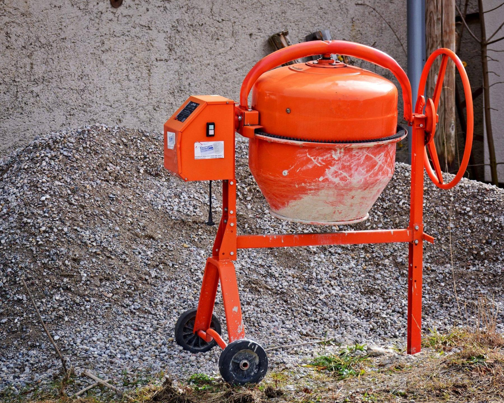
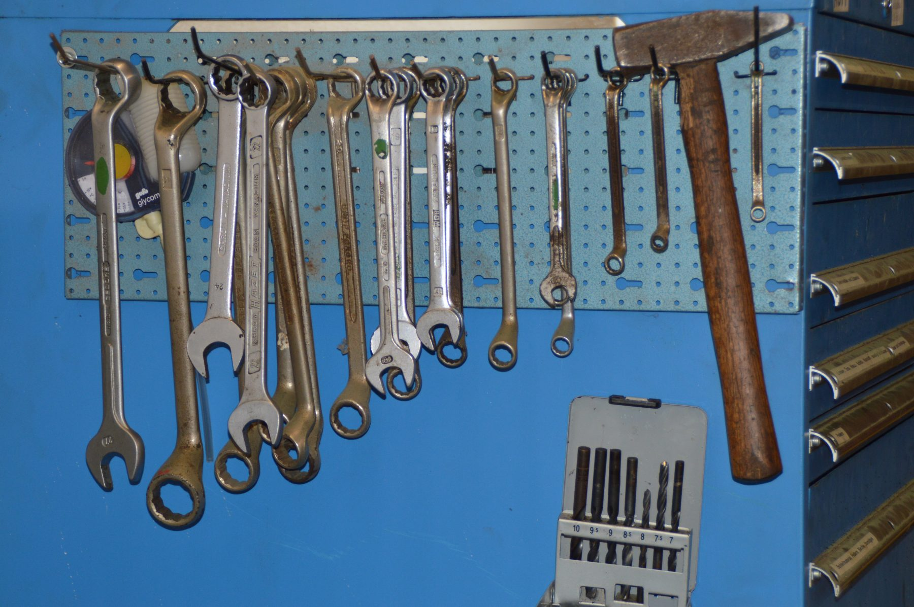
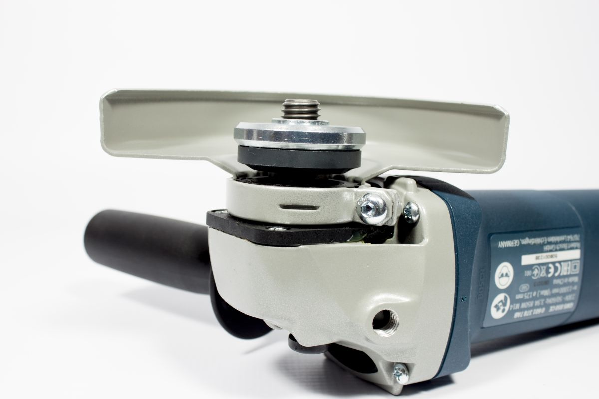
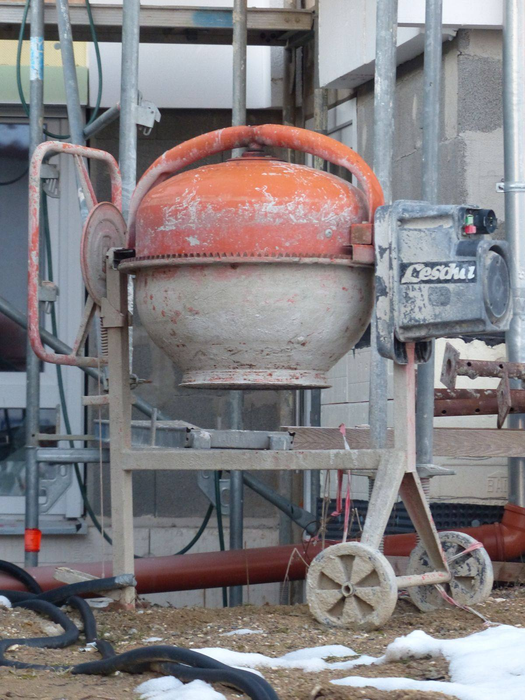
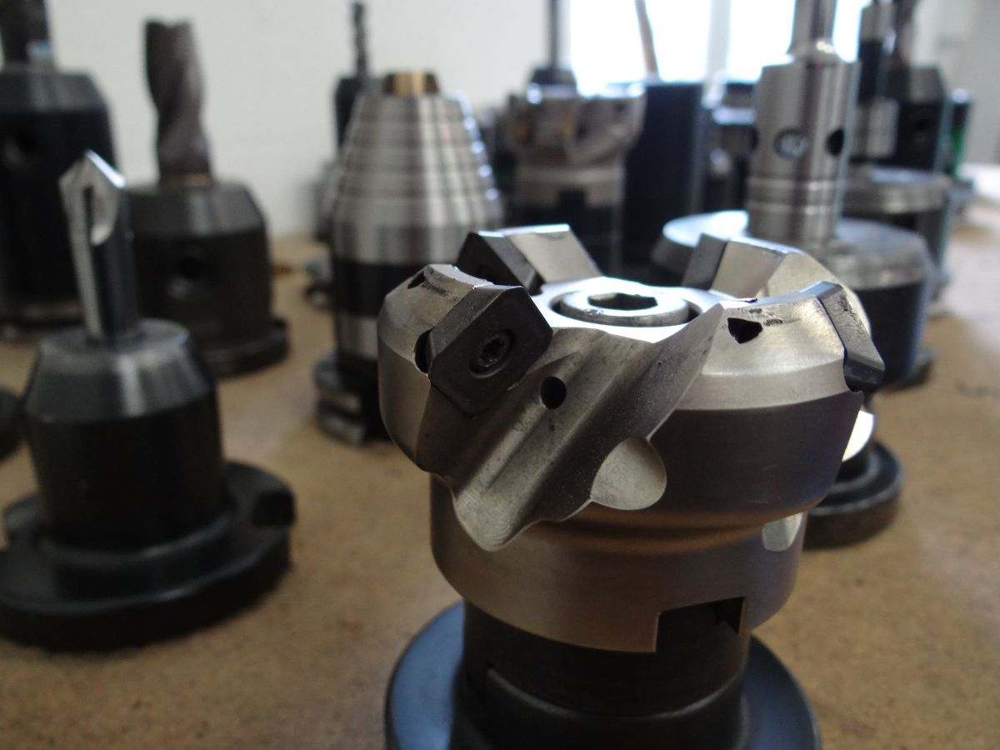
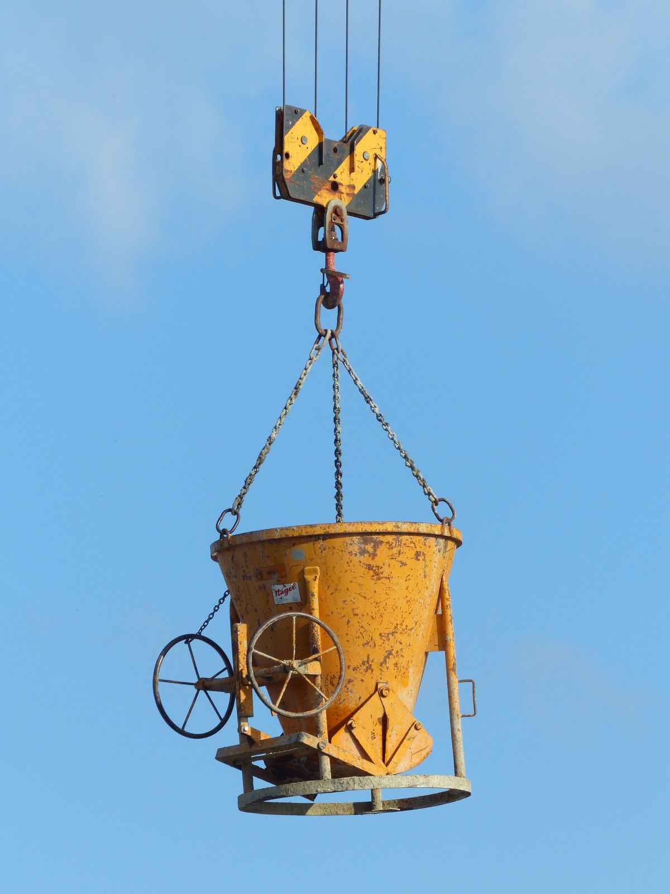
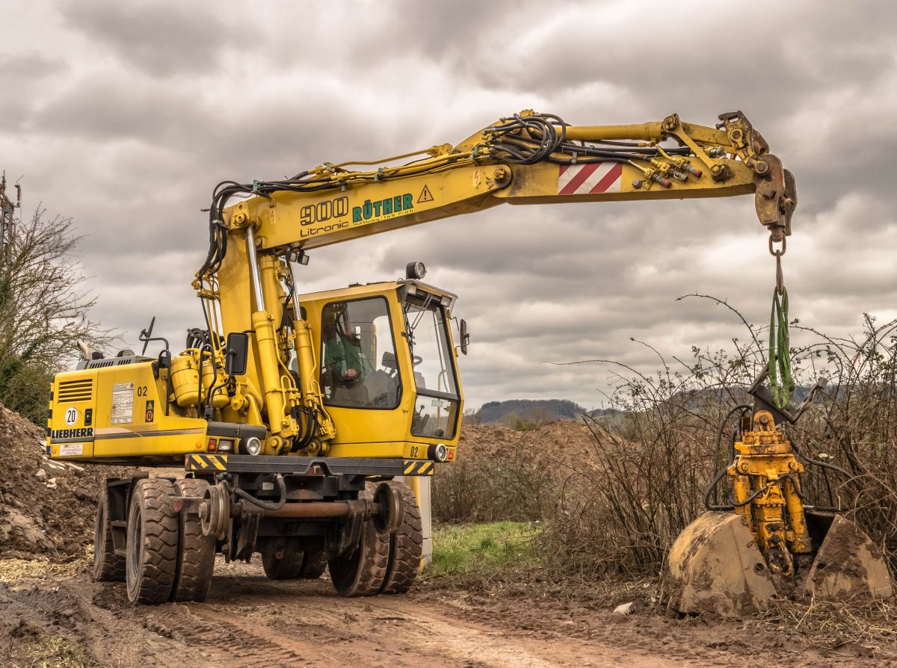

01
Diga el trabajo, no la máquina
«Voy a romper un radier de diez centímetros» sirve más que «necesito un martillo». Con lo primero le pasan la máquina correcta; con lo segundo le pasan la que pidió, y si era la equivocada el día se paga igual.
Loncoche · Región de La Araucanía
Necesita hacer un trabajo. Esta página parte por ahí: qué va a hacer, y recién después qué máquina lo hace. Es al revés de como se ordena cualquier catálogo de arriendo, y es como piensa el que llama.
01 — La pieza de esta página
Un catálogo de arriendo lista máquinas. Pero nadie llama diciendo «necesito una placa compactadora»: llama diciendo «voy a hacer un radier». La traducción entre las dos cosas es lo que sale caro cuando se equivoca, porque el día de arriendo se paga igual.
| Lo que va a hacer | La máquina | Lo que casi nadie le dice |
|---|---|---|
| Hacer un radier o una losa chica | Hormigonera + vibrador de inmersión | Sin vibrador el hormigón queda con nidos de piedra por dentro. No se ve el día que se vacía: se ve el año que se descascara. |
| Romper un piso de concreto o abrir un muro | Martillo demoledor | Pregunte por el peso, no por la marca. Uno de treinta kilos rompe el doble de rápido y también lo deja sin espalda en dos horas. A veces conviene el chico y más tiempo. |
| Perforar hormigón para pasar una cañería | Rotomartillo con broca SDS | La broca casi nunca va incluida, y es justo lo que más se rompe. Confirme si la pone usted antes de salir. |
| Cortar cerámica, porcelanato o pastelones | Cortadora de mesa con disco de agua | El disco se gasta con el uso y en muchas casas se cobra aparte. Pregúntelo por teléfono: es la sorpresa más común al devolver. |
| Compactar el relleno antes de pavimentar | Placa compactadora o rana, si es zanja angosta | No son intercambiables. La placa compacta superficie ancha; en una zanja no entra y deja el fondo suelto. Ahí va la rana, y no al revés. |
| Alisar un radier recién vaciado | Alisadora de hélice («avión») | Es la única de esta lista que no se puede arrendar después: el hormigón tiene su hora y no espera. Se reserva el mismo día que se pide el mixer. |
| Cortar fierro, perfiles o candados | Esmeril angular o tronzadora, si son varios cortes | Con esmeril el corte sale torcido y gasta el triple de discos. La tronzadora corta a escuadra y sale más barata en discos que lo que cuesta arrendarla. |
| Trabajar donde todavía no hay luz | Generador | El dato que importa es cuántos watts consume su herramienta, no el porte del generador. Anótelo de la etiqueta antes de ir: un generador chico con una máquina grande no parte y se echa a perder. |
| Llegar a un techo o pintar una fachada | Andamio modular | Se arrienda por cuerpos, y los cuerpos son enteros: no hay medio. Mida la altura antes de encargarlo. |
Esta tabla es conocimiento general del rubro, escrito por mí, y sirve igual para cualquier casa de arriendo del país. No promete que M y D tenga las nueve máquinas: qué hay de verdad, en qué tamaños y a qué precio lo completa el negocio antes de publicar.

Nadie arrienda una hormigonera.
Arrienda un día sin atrasos.
02 — Las cinco preguntas del mesón
Ninguna de estas cinco cosas es un secreto. Lo único que pasa es que se preguntan en el mostrador, con la camioneta afuera y el día ya empezado, y ahí es tarde para cambiar de idea.
01
«Voy a romper un radier de diez centímetros» sirve más que «necesito un martillo». Con lo primero le pasan la máquina correcta; con lo segundo le pasan la que pidió, y si era la equivocada el día se paga igual.
02
La pregunta que más discusiones evita. Un «día» de arriendo no siempre son veinticuatro horas: en muchas casas es una jornada, y devolver a las nueve de la mañana siguiente puede contar como dos. Pregúntelo por teléfono, antes.
03
Toda casa de arriendo pide documento y algún respaldo. Cuánto y de qué forma lo define el negocio, y por eso acá no va ninguna cifra: pregúntelo antes de ir, no en el mesón.
04
Discos, brocas, combustible y aceite. Lo habitual es que corran por cuenta de quien arrienda, pero se pregunta igual: es lo que hace que un arriendo barato termine caro.
05
No al devolver. Una máquina que siguió trabajando fallada se rompe entera, y ahí la conversación deja de ser por un día de arriendo. Un llamado de treinta segundos cambia todo el asunto.
Las respuestas concretas —plazos, garantía, si hay traslado y hasta dónde— las pone M y D. Esta sección dice qué preguntar, no qué contestan.
Verificado en Google Maps el 02-09-2026
No aparece otro arriendo de maquinaria en la comuna.

03 — Lo que la página hace y el tablero no
En un galpón de arriendo el tablero lo dice todo: cada herramienta tiene su lugar marcado, y cuando la silueta está vacía es porque la máquina anda trabajando. El problema es que el tablero está adentro y el cliente está a diez cuadras.
Una página con las máquinas listadas hace lo mismo desde afuera, y de paso contesta a las once de la noche, que es cuando alguien decide que el sábado hace el radier.
Lista de ejemplo con las familias que suele tener un arriendo de maquinaria. Qué tiene M y D de verdad no lo sé y no se inventa: esta lista está armada y vacía a propósito, para que la complete el negocio.
04 — El oficio





05 — Contacto
Qué decir al llamar, en tres líneas
Las cinco líneas en cursiva son las que hay que llenar antes de publicar. Mientras estén así, la página muestra honestamente lo que todavía no se sabe.
Para el dueño de M y D
Si alguien en Loncoche busca «arriendo de maquinaria», le sale usted y nadie más. Esa es una posición que casi nadie tiene. Pero la ficha no dice qué máquinas hay, y el que no ve lo que busca no llama: maneja a Villarrica o a Temuco, donde sí hay páginas con el listado.
La página no está para que lo encuentren —ya lo encuentran—. Está para que el que lo encontró se quede.